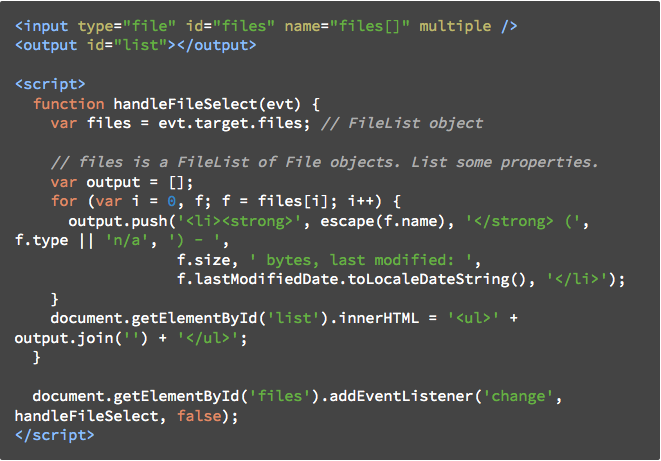

- API = Application Programming Interface
- eine der fünf grundlegenden Anforderungen an Betreibssysteme
- ermöglicht Anbindung an das Betriebssystem
- Programmierschnittstelle auf Quellext-Ebene
- auf lokale Dateien zugreifen und diese in HTML darstellen
- Einführung mit HTML5
- z.Bsp. Dateien vor Upload im Browserfenster darstellen
- nur Zugriff auf bereits ausgewählte Dateien
- einzelne Datei
- arrayartige Folge von File-Objekten. (input type="file" multiple)
- ermöglicht Unterteilen einer Datei in Bytebereiche

input accept="image/jpeg" type="file" id="files2" name="files[]" multiple